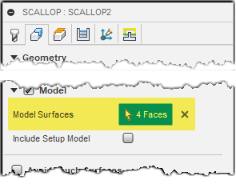
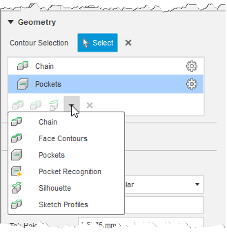
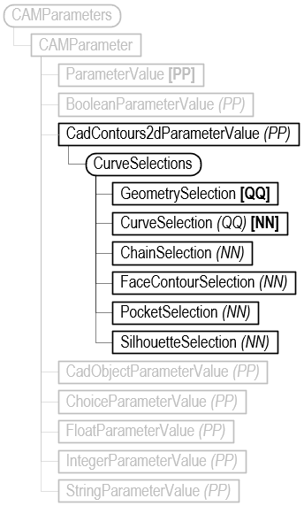
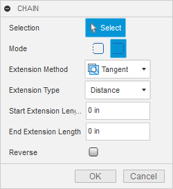
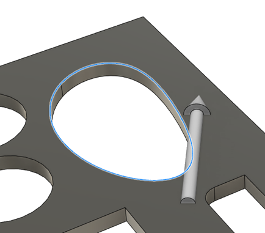
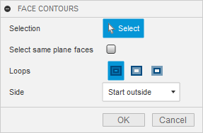
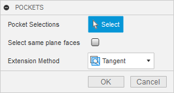
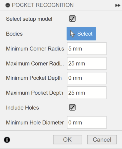
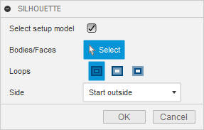
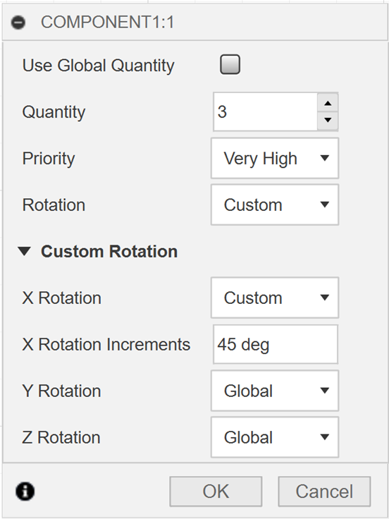

CadObjectParameterValue
The CadObjectParameterValue type of parameter value is returned for parameters that support the selection of various design goemetry. This is different from contour selections in that it uses the geometry directly, whereas the contour selections use additional processing on the input geometry to calculate geomtery than can be used by an operation. An example of this parameter type is shown below.

def AddCadObjectParameterValue():
try:
app = adsk.core.Application.get()
ui = app.userInterface
cam: adsk.cam.CAM = app.activeProduct
# Have a face selected to add to the scallop.
sel = ui.selectEntity('Select the face to add to the scallop.', 'Faces')
face: adsk.fusion.BRepFace = sel.entity
# Get an operation that has a specific name from the first setup.
setup = cam.setups[0]
op = setup.operations.itemByName('Scallop2')
# Get the "model" parameter from the operation, which is a CadObjectParameterValue.
# The name of the parameter will vary depending on the type of operation.
cadObjectParam: adsk.cam.CadObjectParameterValue = op.parameters.itemByName('model').value
# Get the value of the parameter, which is a list of faces in this case.
faces = cadObjectParam.value
# Add the selected face to the faces already defined for the operation.
faces.append(face)
# Assign the faces back to the operation.
cadObjectParam.value = faces
except:
if ui:
ui.messageBox('Failed:\n{}'.format(traceback.format_exc()))
CadContours2dParameterValue
The CadContours2dParameterValue type of parameter value is returned for parameters that support the selection of 2D contours. An example of this parameter type is shown below. An operation can have multiple contour selections, which can be different contour types, as shown below, where the operation has a Chain and a Pockets contour defined.

The value of a CadContours2dParameterValue isn’t a simple value like the parameters discussed so far. The value property returns a CurveSelections object, which is a collection of objects that represent different types of selections. Below is the full object model for the CadContours2dParameterValue. You can compare the list in the command above to the diagram below and see that the API currently supports all options except for “Sketch Profiles”.

Below is a description and sample code for each of the types.
ChainSelection
When creating a chain selection in the user interface, you select a set of chained curves and can define the options shown below in the CHAIN dialog. These same options are available in the API on the ChainSelection object.

When interactively defining the chain, as you select edges or sketch entities, Fusion will automatically find and select chained entities. This automatic selection does not happen when using the API. Instead, you must provide each of the curves you want to be part of the chain, and the curves must be in their connected order. Providing curves in the correct order typically involves using some of the Design API to interrogate the model to find the geometry of interest. For example, the Component.createOpenProfile can be used to find chained curves in a sketch, and the BRepEdge.tangentiallyConnectedEdges can be used to fomd tangentially connected edges. The topology inherent in the B-Rep also provides many tools for interrogating and finding specific geometry.
The first curve in the list of curves you provide defines the side that will be cut. All curves in a sketch and B-Rep edges have a natural direction, which can be determined by checking the parameterization of the sketch curve or edge. The direction of the increasing parameter value is the natural direction of the sketch curve or edge. The chain direction will be in that direction, and for many operation types, like contour operations, it defines which side of the curve the tool will be on. If you could stand on the curve and look along it toward increasing parameters, the tool will be on your right. Reversing the chain will flip the direction, so you’re now looking at the curve in the direction of decreasing parameters. The cut side is still to your right, but it’s now on the other side of the curve.
Below is a picture to illustrate this concept. The API has been used to determine the increasing parameter direction of the highlighted edge, and an arrow has been drawn to illustrate that direction. If we’re standing on the arrow, looking in the direction it points, the tool will cut on the right side, which is not the side we want. The isReverse property of the chain can be set to reverse the direction, effectively flipping the arrow, so now the right side is the inside of the cutout.

Below is a function that prompts for the selection of a face and then uses the outer edges of the face to define a chain, which it then adds to a 2D Contour operation, which it finds by its name.
def addChain():
try:
app = adsk.core.Application.get()
ui = app.userInterface
cam: adsk.cam.CAM = app.activeProduct
# Have a face selected whose edges will be used for the chain.
sel = ui.selectEntity('Select the bottom face of the part.', 'PlanarFaces')
bottomFace: adsk.fusion.BRepFace = sel.entity
# Get an operation that has a specific name from the first setup.
setup = cam.setups[0]
op = setup.operations.itemByName('2D Contour1')
# Get the "contours" parameter from the 2D Contour operation, which is a CAD Contour 2D.
# The name of the parameter will vary depending on the type of operation.
contourParam: adsk.cam.CadContours2dParameterValue = op.parameters.itemByName('contours').value
# Get the CurveSelections object from the CAD contour. This
# object manages the list of contour selections.
curveSelections = contourParam.getCurveSelections()
# Find the outer loop of the selected face.
outerLoop = None
for bottomLoop in bottomFace.loops:
if bottomLoop.isOuter:
outerLoop = bottomLoop
break
# Get the edges from the loop and add them to a list.
outerEdges = [e for e in outerLoop.edges]
# Create a new chain selection.
chainSel: adsk.cam.ChainSelection = curveSelections.createNewChainSelection()
# Set some properties of the chain.
chainSel.isOpen = False
chainSel.isReverted = False
# Add the geometry to the chain.
chainSel.inputGeometry = outerEdges
# Apply the curve selection back to the parameter.
contourParam.applyCurveSelections(curveSelections)
except:
if ui:
ui.messageBox('Failed:\n{}'.format(traceback.format_exc()))
FaceContourSelection
When creating a face contour selection in the user interface, you select one or more faces and can define the options shown below in the FACE CONTOURS dialog. These same options are available in the API on the FaceContourSelection object.

Face contours are simpler than the chain because they are always closed and have a well-defined outside and inside. Below is some sample code that gets a selection of a face and adds a Face Contour selection to an existing Face operation. The picture on the left shows that initial state of the operation where it’s only machining the circular face on the top of the boss. The picture to the right shown the state after running the script below where it prompts for the selection of a face and the face shown in blue on the left was selected. Because the “Select same plane faces” option is specified using the API, the smaller face was automatically used.
def addFaceContour():
try:
app = adsk.core.Application.get()
ui = app.userInterface
cam: adsk.cam.CAM = app.activeProduct
# Have a face selected.
sel = ui.selectEntity('Select the face to contour.', 'Faces')
face: adsk.fusion.BRepFace = sel.entity
# Get an operation that has a specific name from the first setup.
setup = cam.setups[0]
op = setup.operations.itemByName('Face1')
# Get the "stockContours" parameter from the Face operation, which is a CAD Contour 2D.
# The name of the parameter will vary depending on the type of operation.
contourParam: adsk.cam.CadContours2dParameterValue = op.parameters.itemByName('stockContours').value
# Get the CurveSelections object from the CAD contour. This
# object manages the list of contour selections.
curveSelections = contourParam.getCurveSelections()
# Create a new face contour selection.
faceContourSel: adsk.cam.FaceContourSelection = curveSelections.createNewFaceContourSelection()
# Set some properties of the face contour.
faceContourSel.isSelectingSamePlaneFaces = True
faceContourSel.loopType = adsk.cam.LoopTypes.AllLoops
faceContourSel.sideType = adsk.cam.SideTypes.StartOutsideSideType
# Add the face to the face contour.
faceContourSel.inputGeometry = [face]
# Apply the curve selection back to the parameter.
contourParam.applyCurveSelections(curveSelections)
except:
if ui:
ui.messageBox('Failed:\n{}'.format(traceback.format_exc()))
PocketSelection
When creating a pocket selection in the user interface, you select one or more faces that represent the bottom of a pocket, and you can also specify the options shown below in the POCKETS dialog. These same options are available in the API on the PocketSelection object.

The code below has the user select a face and then adds that face as a pocket selection to an existing pocket operation.
def addPocketContour():
try:
app = adsk.core.Application.get()
ui = app.userInterface
cam: adsk.cam.CAM = app.activeProduct
# Have the pocket face selected.
sel = ui.selectEntity('Select the planar face to pocket.', 'PlanarFaces')
face: adsk.fusion.BRepFace = sel.entity
# Get an operation that has a specific name from the first setup.
setup = cam.setups[0]
op = setup.operations.itemByName('2D Pocket2')
# Get the "pockets" parameter from the operation, which is a CAD Contour 2D.
# The name of the parameter will vary depending on the type of operation.
contourParam: adsk.cam.CadContours2dParameterValue = op.parameters.itemByName('pockets').value
# Get the CurveSelections object from the CAD contour. This
# object manages the list of contour selections.
curveSelections = contourParam.getCurveSelections()
# Create a new pocket selection.
pocketSel: adsk.cam.PocketSelection = curveSelections.createNewPocketSelection()
# Set some properties of pocket contour.
pocketSel.isSelectingSamePlaneFaces = False
# Add the selected face to the face contour.
pocketSel.inputGeometry = [face]
# Apply the curve selection back to the parameter.
contourParam.applyCurveSelections(curveSelections)
except:
if ui:
ui.messageBox('Failed:\n{}'.format(traceback.format_exc()))
PocketRecognitionSelection
When creating a pocket recognition selection in the user interface, you select one or more bodies or the setup model selection. You can define the options shown below in the POCKET RECOGNITION dialog. These same options are available in the API on the PocketRecognitionSelection object. Contrary to the other geometry selections, this selection's associativity is restricted to its parameters and the entire body, not the resulting BRepFace or BRepEdge objects. You cannot explicitly exclude a particular pocket; the resulting number of recognized pockets may also change if the body geometry changes.

The code below includes all setup bodies, sets the parameters above and then uses the recognized pockets in an existing pocket operation.
def addPocketRecognitionSelectionContour():
try:
app = adsk.core.Application.get()
ui = app.userInterface
cam: adsk.cam.CAM = app.activeProduct
# Get an operation that has a specific name from the first setup.
setup = cam.setups[0]
op = setup.operations.itemByName('2D Pocket2')
# Get the "pockets" parameter from the operation, which is a CAD Contour 2D.
# The name of the parameter will vary depending on the type of operation.
contourParam: adsk.cam.CadContours2dParameterValue = op.parameters.itemByName('pockets').value
# Get the CurveSelections object from the CAD contour. This
# object manages the list of contour selections.
curveSelections = contourParam.getCurveSelections()
# Create a new pocket selection.
pocketRecSel: adsk.cam.PocketRecognitionSelection = curveSelections.createNewPocketRecognitionSelection()
# Set some properties of pocket contour.
pocketRecSel.isSetupModelSelected = True
# Include holes.
pocketRecSel.areHolesIncluded = True
# Set minimum hole diameter.
pocketRecSel.minimumHoleDiameter= 0.1
# Set minimum and maximum pocket radii.
pocketRecSel.minimumCornerRadius = 0.2
pocketRecSel.maximumCornerRadius = 1.0
# Set minimum and maximum pocket depth.
pocketRecSel.minimumPocketDepth = 0.0
pocketRecSel.maximumPocketDepth = 2.0
# Apply the curve selection back to the parameter.
contourParam.applyCurveSelections(curveSelections)
except:
if ui:
ui.messageBox('Failed:\n{}'.format(traceback.format_exc()))
SilhouetteSelection
When creating a silhouette selection in the user interface, you select one or more bodies to use in calculating the silhouette curves and you can define the options shown below in the SILHOUETTE dialog. These same options are available in the API on the SilhouetteSelection object.

The code below has the user select a body and then adds that body as a silhouette selection to an existing pocket operation.
def addSilhouetteContour():
try:
app = adsk.core.Application.get()
ui = app.userInterface
cam: adsk.cam.CAM = app.activeProduct
# Have a body selected to use for the silhouette.
sel = ui.selectEntity('Select the body for the silhouette.', 'SolidBodies')
body: adsk.fusion.BRepBody = sel.entity
# Get an operation that has a specific name from the first setup.
setup = cam.setups[0]
op = setup.operations.itemByName('2D Contour1')
# Get the "contours" parameter from the operation, which is a CAD Contour 2D.
# The name of the parameter will vary depending on the type of operation.
contourParam: adsk.cam.CadContours2dParameterValue = op.parameters.itemByName('contours').value
# Get the CurveSelections object from the CAD contour. This
# object manages the list of contour selections.
curveSelections = contourParam.getCurveSelections()
# Create a new silhouette selection.
silhouetteSel: adsk.cam.SilhouetteSelection = curveSelections.createNewSilhouetteSelection()
# Set some properties of the face contour.
silhouetteSel.isSetupModelSelected = False
silhouetteSel.loopType = adsk.cam.LoopTypes.AllLoops
# Add the body to the silhouette selection.
silhouetteSel.inputGeometry = [body]
# Apply the curve selection back to the parameter.
contourParam.applyCurveSelections(curveSelections)
except:
if ui:
ui.messageBox('Failed:\n{}'.format(traceback.format_exc()))
Machine/Avoid Selections
Currently, there are two types of groups in the table that the CAM API supports: direct selection groups, which is equivalent to what the user would do from the UI, as shown below, and default selection groups which are created automatically by the API to match the parameter driven groups in the operation. These default selection groups can be accessed from the API in order to change their properties, but their geometry cannot be directly modified.

The machining mode that is currently set will determine which value the radial and axial offset functions refer to. When set to Machine, the radial and axial offset functions will read/set the stock to leave parameter for the current group. When set to Avoid, the radial and axial offset methods will read/set the clearance value, and the Fixture mode will map to the fixture clearance value. This is supported in the API through the MachineAvoidDefaultSelection, MachineAvoidDirectSelection, and MachineAvoidGroups objects.
The sync function is used to synchronize the selections and properties of the default groups from the current operation. This is needed when there are changes made to parameters that drive the default groups (e.g. Setup model or fixture selection changes to be reflected in the MachineAvoidGroups object on the API side). This function must not be called before applyMachineAvoidGroups, because temporary group settings and selections will not have been stored in the operation object and will be overwritten.
Below, is a script that demonstrates the new way of setting up the machine/avoid groups and their properties. The script assumes that the user has a document opened that has at least two different bodies.
import random
import adsk.core, adsk.fusion, adsk.cam, traceback
tool_json = '{ "BMC": "hss", "GRADE": "Mill Generic", "description": "10mm END MILL_ALLY", "geometry": { "CSP": false, "DC": 10,
"HAND": true, "LB": 50, "LCF": 35, "NOF": 3, "OAL": 53, "SFDM": 10, "shoulder-length": 35 }, "guid": "d26c8a29-7782-4a5a-9c6d-3f21d9a66e9e",
"holder": { "description": "Maritool CAT40-ER32-2.35", "guid": "", "product-id": "CAT40-ER32-2.35", "product-link": "",
"segments": [ { "height": 3.7592, "lower-diameter": 38.1, "upper-diameter": 50.038 }, { "height": 21.2344, "lower-diameter": 50.038,
"upper-diameter": 50.038 }, { "height": 4.470400000000001, "lower-diameter": 39.878, "upper-diameter": 39.878 }, { "height": 2.286,
"lower-diameter": 39.878, "upper-diameter": 44.45 }, { "height": 10.795000000000003, "lower-diameter": 44.45, "upper-diameter": 44.45 },
{ "height": 1.27, "lower-diameter": 44.45, "upper-diameter": 46.99 }, { "height": 0.762, "lower-diameter": 62.0268, "upper-diameter": 63.5508 },
{ "height": 3.683, "lower-diameter": 63.5508, "upper-diameter": 63.5508 }, { "height": 2.0066, "lower-diameter": 63.5508, "upper-diameter": 56.261 },
{ "height": 2.9972, "lower-diameter": 56.261, "upper-diameter": 56.261 }, { "height": 2.0066, "lower-diameter": 56.261, "upper-diameter": 63.5508 },
{ "height": 3.6322, "lower-diameter": 63.5508, "upper-diameter": 63.5508 }, { "height": 0.762, "lower-diameter": 63.5508, "upper-diameter": 62.0268 },
{ "height": 3.175, "lower-diameter": 44.45, "upper-diameter": 44.45 } ], "type": "holder", "unit": "millimeters", "vendor": "Maritool" },
"post-process": { "break-control": false, "comment": "", "diameter-offset": 2, "length-offset": 2, "live": true, "manual-tool-change": false,
"number": 2, "turret": 0 }, "product-id": "", "product-link": "", "start-values": { "presets": [ { "description": "", "f_n": 0.016666666666667,
"f_z": 0.1, "guid": "10f47137-ad2c-4aa2-9da0-2781c27e84ab", "n": 12000, "n_ramp": 12000, "name": "Preset 1", "tool-coolant": "flood",
"use-stepdown": false, "use-stepover": false, "v_c": 376.9911184307752, "v_f": 3600, "v_f_leadIn": 1000, "v_f_leadOut": 1000,
"v_f_plunge": 200, "v_f_ramp": 300 }, { "description": "", "f_n": 0.022222222222222, "f_z": 0.088888888888889, "guid": "add69606-20d4-4144-976c-878e648fd80a",
"n": 9000, "n_ramp": 9000, "name": "SecondPreset", "tool-coolant": "flood", "use-stepdown": false, "use-stepover": false, "v_c": 282.7433388230814,
"v_f": 2400, "v_f_leadIn": 1000, "v_f_leadOut": 1000, "v_f_plunge": 200, "v_f_ramp": 300 } ] }, "type": "flat end mill", "unit": "millimeters", "vendor": "" }'
def run(context):
ui = None
try:
app = adsk.core.Application.get()
doc = app.activeDocument
ui = app.userInterface
# Make
camWS = app.userInterface.workspaces.itemById('CAMEnvironment')
camWS.activate()
cam = adsk.cam.CAM.cast(doc.products.itemByProductType("CAMProductType"))
models = [cam.manufacturingModels.item(0).occurrence.childOccurrences.item(0).childOccurrences.item(0)]
if cam == None:
ui.messageBox('There is no CAM data in the active document')
setups = cam.setups
# Create setup and set parameters.
setupInput = setups.createInput(adsk.cam.OperationTypes.MillingOperation)
# Set the first body in the model to be the setup model.
setupInput.models = models
setup = setups.add(setupInput)
# create new face operation in the newly created setup.
operationInput = setup.operations.createInput('parallel')
tool = adsk.cam.Tool.createFromJson(tool_json)
operationInput.tool = tool
operationInput.toolPreset = tool.presets.item(1)
parallelMilling = setup.operations.add(operationInput)
# Get all the faces in the model and randomly select 4
body = models[0]
# Get the "checkSurfaceSelectionSets" parameter from the operation, which
# is a CadFaceGroups cad object.
surfaceGroupsParam: adsk.cam.CadMachineAvoidGroupsParameterValue = parallelMilling.parameters.itemByName('checkSurfaceSelectionSets').value
# Get the MachineAvoidGroups object from the CadFaceGroups cad object. This
# object manages the list of mutually exclusive groups.
machineAvoidGroups = surfaceGroupsParam.getMachineAvoidGroups()
# -----------------------------------------------------------
# Create a new user group - Machine.
machineAvoidGroup: adsk.cam.MachineAvoidDirectSelection = machineAvoidGroups.createNewMachineAvoidDirectSelectionGroup()
# Set properties on the newly created exclusiveGroup
machineAvoidGroup.machineMode = adsk.cam.MachiningMode.Machine_MachiningMode
machineAvoidGroup.radialOffset = 0.1
machineAvoidGroup.axialOffset = 0.2
# Add the face/body/component to the exclusiveGroup selection.
machineAvoidGroup.inputGeometry = [cam.manufacturingModels.item(0).occurrence.childOccurrences.item(0).childOccurrences.item(0).bRepBodies.item(0).faces.item(0)]
# Change properties of the model group.
modelGroup = machineAvoidGroups.defaultGroup(adsk.cam.DefaultGroupType.Model_GroupType)
modelGroup.machineMode = adsk.cam.MachiningMode.Machine_MachiningMode
# These set the radial and axial stock to leave.
modelGroup.radialOffset = 0.7
modelGroup.axialOffset = 0.7
modelGroup.machineMode = adsk.cam.MachiningMode.Avoid_MachiningMode
# These set the radial and axial clearances.
modelGroup.radialOffset = 0.2
modelGroup.axialOffset = 0.3
surfaceGroupsParam.applyMachineAvoidGroups(machineAvoidGroups)
# Gen the op.
cam.generateToolpath(parallelMilling)
except:
if ui:
ui.messageBox('Failed:\n{}'.format(traceback.format_exc()))
CAMArrangeParameterValue
The CAMArrangeParameterValue type of parameter value is returned for the arrangeTargets parameter of an additive arrange operation.
The value property returns an ArrangeSelections object, which is a collection of objects that represent an ArrangeSelection.
When editing a component in the user interface, you can define the options shown below in the edit component dialog. These same options are available in the API on the ArrangeSelection object.

Available properties on the ArrangeSelection object:
- inputGeometry
- priorityType
- customRotationX
- isUsingCustomRotationX
- customRotationY
- isUsingCustomRotationY
- customRotationZ
- isUsingCustomRotationZ
- customQuantity
- isUsingCustomQuantity
If the isUsingCustom property of an ArrangeSelection is false, the accompanying global option of the arrange operation will be used.
The code below has the user select an occurrence and then adds that occurrence as an arrange selection to an existing arrange operation.
#Author-
#Description-
import adsk.core, adsk.fusion, adsk.cam, traceback
def addArrangeSelection():
try:
app = adsk.core.Application.get()
ui = app.userInterface
cam: adsk.cam.CAM = app.activeProduct
# Have a component selected to use for the arrangement.
sel = ui.selectEntity('Select a component to arrange.', 'Occurrences')
component: adsk.fusion.Occurrence = sel.entity
# Get an operation that has a specific name from the first setup.
setup = cam.setups[0]
op = setup.operations.itemByName('Additive Arrange')
# Get the "arrangeTargets" parameter from the operation, which is a CAMArrangeParameterValue.
arrangeParam: adsk.cam.CAMArrangeParameterValue = op.parameters.itemByName('arrangeTargets').value
# Get the ArrangeSelections object from the CAMArrangeParameterValue. This
# object manages the list of arrange selections.
arrangeSelections: adsk.cam.ArrangeSelections = arrangeParam.getArrangeSelections()
# Create a new arrange selection.
arrangeSel: adsk.cam.ArrangeSelection = arrangeSelections.createNewArrangeSelection()
# Set some properties of the arrange selection.
arrangeSel.priorityType = adsk.cam.ArrangePriorityTypes.VeryHighArrangePriorityType
arrangeSel.customRotationX = 45
arrangeSel.customQuantity = 2
# Add the component to the arrange selection.
arrangeSel.inputGeometry = component
# Apply the arrange selection back to the parameter.
arrangeParam.applyArrangeSelections(arrangeSelections)
except:
if ui:
ui.messageBox('Failed:\n{}'.format(traceback.format_exc()))
def run(context):
ui = None
try:
addArrangeSelection()
app = adsk.core.Application.get()
cam: adsk.cam.CAM = app.activeProduct
# Get an operation that has a specific name from the first setup.
setup = cam.setups[0]
op = setup.operations.itemByName('Additive Arrange')
cam.generateToolpath(op)
except:
if ui:
ui.messageBox('Failed:\n{}'.format(traceback.format_exc()))